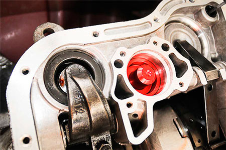

О компании

Sonnax является лидирующем поставщиком компонентов для ремонта автоматических трансмиссий. Sonnax экспортирует запчасти в более чем 70 стран и поддерживает развиваю-
щуюся сеть по всему миру. Результатом ориентированности Sonnax на успешные партнер-
ские отношения является международная сеть поставщиков, ремонтных мастерских и служб технической поддержки. Важным достижением является комиссия Sonnax TASC Force. Эта комиссия является объединением экспертов по трансмиссиям и мастеров. Они собираются вместе, чтобы обменяться полезными знаниями в области эксплуатации трансмиссий.
В главном офисе Sonnax в Южном Вермонте находятся отделения проектирования, исследо-
ваний, испытаний и распространения продукции.Дополнительные исследовательские центры находятся в Калифорнии, Джорджии, Иллинойсе и Висконсине. Sonnax является лидирующем поставщиком компонентов для ремонта автоматических трансмиссий. Sonnax экспортирует запчасти в более чем 70 стран и поддерживает развивающуюся сеть. Sonnax является лидирующем поставщиком компонентов для ремонта автоматических трансмиссий. Sonnax экспортирует
Sonnax является лидирующем поставщиком компонентов для ремонта автоматических трансмиссий. Sonnax экспортирует запчасти в более чем 70 стран и поддерживает развивающуюся сеть по всему миру. Результатом ориентированности Sonnax на успешные партнерские отношения является международная сеть поставщиков, ремонтных мастерских и служб технической поддержки. Важным достижением является комиссия Sonnax TASC Force. Эта комиссия является объединением экспертов по трансмиссиям и мастеров. Они собираются вместе, чтобы обменяться полезными знаниями в области эксплуатации трансмиссий.эксплуатации трансмиссий.
Сотрудники
8 (499) 641-01-51 (городской)
8 (499) 641-01-51 (факс)
8 (499) 641-01-51 (городской)
8 (499) 641-01-51 (факс)
8 (499) 641-01-51 (городской)